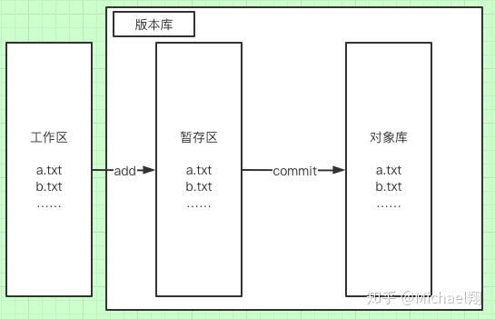

git操作的常见命令总结
1、报错fatal: ‘origin’ does not appear to be a git repository…”
一、常见问题
1、报错fatal: ‘origin’ does not appear to be a git repository…”
是因为远程不存在origin这个仓库名称，可以使用如下操作方法，查看远程仓库名称以及路径相关信息，可以删除错误的远程仓库名称，重新添加新的远程仓库；
git remote -v ：查看远程仓库的详细信息，可以看到仓库名称和分支信息
git remote remove xxx ：删除远程的xxx仓库
git remote add origin 仓库地址 ：添加远程仓库地址
git push -u origin master ：提交到远程仓库的master主干
这是直接将代码推送到master主干中的步骤，下面是创建分支以及推送到分支的步骤
2、创建分支推送并合并
git branch -a ：列出所有的分支
git branch dev ：创建dev分支
git checkout dev ：切换到dev分支
注意，不要忘记切换到dev分支。之后是正常步骤推送到服务器
git add XXX
git commit -m "注释"
git push origin dev
3、同步（合并）远程到本地
git pull origin master : 可以将远程仓库中相关修改合并到本地
部分情况下，执行pull命令之后仍然无法上传，如果是自己开发可以考虑强制合并上传（在远程仓库中进行的相关修改会被删除，使远程仓库回到你本地仓库未修改之前的那个版本，然后上传你基于本地仓库的修改。）
git push -u origin master -f : 强制合并上传
注意，在团队协作开发中不要使用该方法
二、常见命令笔记
首先记下工作区，暂存区以及对象库的区别
工作区和版本库的概念
在介绍 diff 命令之前，我们先认识一下 Git 的工作目录。在一个 GIt 工作区文件夹下，有一个 .git 隐藏目录。它其实不算是工作区内容，它是 Git 的版本库。

当我们使用 git add 命令时，会将文件添加到暂存区（也称索引区）。需要使用 git commit 命令才能将修改提交到对象库中，这里的 「提交」对应的英文也就是 commit。
1、git diff
1 | git diff // 比较工作区和暂存区的区别 |
2、git reset commit
1.从对象库（已提交的commit库中选择一个版本回退）
1 | git reset HEAD // 将暂存区的内容都清除，转变为HEAD指向commit的内容 |
2.指定选择某个commit版本回退
1 | git reset --soft|--mixed|--hard <commit_id> |
–mixed
会保留源码,只是将git commit和index 信息回退到了某个版本.
–soft
保留源码,只回退到commit信息到某个版本.不涉及index的回退,如果还需要提交,直接commit即可.
–hard
源码也会回退到某个版本,commit和index 都会回退到某个版本.(注意,这种方式是改变本地代码仓库源码)（工作区 暂存区 版本库内容全部都会回退， 慎重使用）
3、git restore 文件名
将工作区的内容恢复成暂存区的内容
注意
git restore是在 Git 2.23 中与git switch. 他们的目的是简化和分离git checkout做太多事情的用例。
git checkout可用于切换分支（也可用于在切换之前创建一个新分支）。此功能已提取到git switch.
git checkout也可用于将文件恢复到指定提交时的状态。此功能已提取到git restore.
它们仍然可以由 执行，git checkout但新命令更易于使用且不易混淆。
总结一下，
1 | git restore readme.txt |
是一种新的方式来做你曾经做过的事情：
1 | git checkout -- readme.txt |
4、git rm 文件名
在工作区和暂存区中同时删除
5、git stash
将工作区以及暂存区的内容进行缓存，并且将工作区和暂存区恢复到最近一次commit的内容，缓存会放到stash中，git stash list 可以查看缓存的情况，git stash pop 可以恢复该缓存的内容
1 | git stash save "注解" // 加上注释的缓存 |
6、文件移动/重命名
1 | git mv 文件名 新文件名 // 重命名文件 |
7、git merge
1 | git merge -h // 查看参数帮助提示 |
8、pull 和 fetch区别
- git pull 是从远程拉下来并且合并分支
- git fetch 仅从远程拉下来分支，不做合并操作
9、删除分支
删除远程分支：git push origin --delete 分支名
删除本地分支：git branch -d 分支名
恢复被删除的分支
https://blog.csdn.net/u011200562/article/details/122086252
更新远程分支列表
git remote update 远程仓库名 --prune
本地仓库重命名
git branch -m 原分支名 新分支名
10、推送本地分支到远程
1 | git push 远程仓库名 本地分支名 |